|
|||||||||||||||||||||||||||
|
|||||||||||||||||||||||||||
|
八方尾根初滑り |
| 開 催 日 | ２００８年１２月２０〜２２日 | |||
| リーダー | 松澤節夫 | |||
| 報 告 者 | 高井(紀） | |||
| HP制作者 | 高井(紀） | |||
| 参加者数 | 会員１１名、ゲスト２名 | |||
| 恒例の八方尾根初滑りは、新しい道具の使い勝手や特性を知り、スキー技術の確認など、シーズン初めとして大事な行事である。 今回は、久しぶりにスキーの名手、藤井さんが参加して指導してくれた。松澤さん、鹿島さんによる指導もあり参加者は各自の持つ問題点を叩き込まれた。 |
| 雪は１１月中旬にたっぷり降ってから全く降らないとのこと。兎平まで行かないと雪がなく往復ゴンドラを使う。幸いなことに、雪質はかなり良く、基本練習には十分だった。 |
| 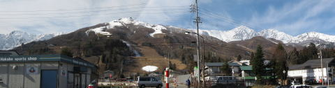 |
| 道路から見るスキー場、正面は名木山ゲレンデ（12/20） |
| 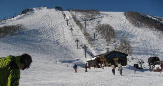 |
| ゴンドラ終点地点から兎平ゲレンデ |
| １日目、2日目 |
| 12月20日 快晴、12月21日 晴、曇、 |
| 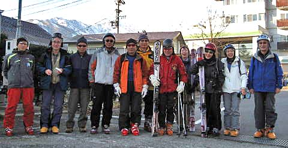 |
| 「あずま」の前で（12/21） |
| 滑れるところは限られているので、主にパノラマ、黒菱ゲレンデで練習しながら滑った。 |
| 黒菱ゲレンデ(12月21日） | ||
| 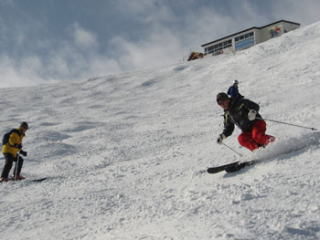 | Ａ | 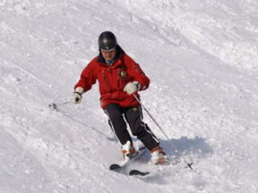 |
| 藤井さん | 松澤さん |
| ３日目 |
| 12月2２日 雨、小雪(兎平) 曇 |
| 前夜から激しい雨、朝は小雨になったが、気温は高く、兎平で新雪！を期待も出来ず。 皆さんは滑る意欲なく早目に帰途に向かう。高井（紀）はリフト券を持っていたので、ゴンドラで上まで行き1時間ほど滑る。 |
| 1日目から3日目のアフタースキー |
| 参加者の滞在日や予定が違っていたので、2つのグループに分かれて、小谷村にあるレストラン「ワインのある食卓」でのディナーを楽しんだ。 |
| 12月20日 | ||
| 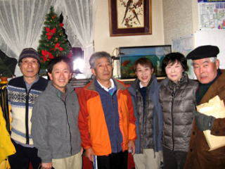 | Ａ | 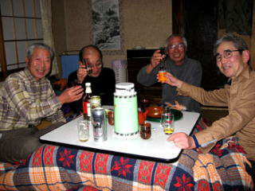 |
| 「ワインのある食卓」に出かける前 | 残り組はあずまで乾杯 |
| 12月21日 | ||
| 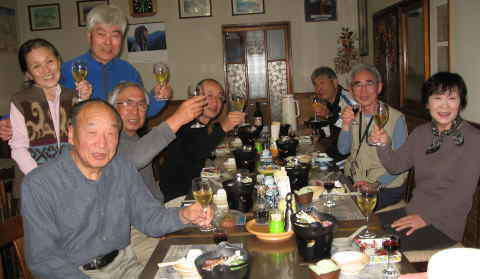 | Ａ | 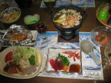 |
| 全員、あずまで食事 |
| 12月22日 | ||
| 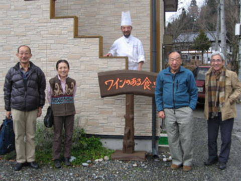 | Ａ | 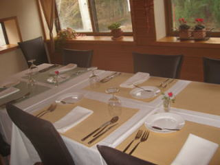 |
| 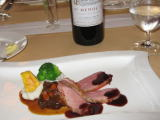 | ||
| 残り組5人は「ワインのある食卓」で食事 |
| 雪は少なかったが、クラブ山行としての楽しい会だった。天候やゲレンデの状況もあり参加者13名のうち早川さん、奥村夫妻はアフタースキーだけの参加だったが、興味深い話題で会を盛り上げてくれた。 また、21日夕食時に白馬でペンション暖家（ダンケ）を営む会員の菊嶋さんがオリジナルワイン「DANKE」を差し入れに来てくれた。 「八方初すべり」の際、時々訪れて楽しむ小谷村の「ワインのある食卓」はお勧めです。 家庭的な雰囲気でゆったりと美味しいフランス料理を楽しめます。 シェフ、花岡さんの地場産の食材を多く使うが、それだけにこだわらない食材選びから、料理の仕方まで若い頃本場で鍛えた腕に、小谷村を愛する心が柔らかに包み込んだ料理です。 |